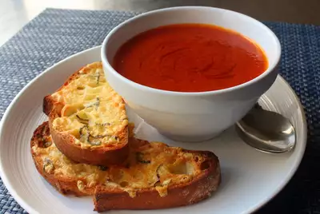

Tomato Soup

This is a random recipe that I found on allrecipes.com
How to Make Tomato Soup
- Boil Tomatoes, onion, garlic cloves, and broth into a pot until the flavors blend
- Strain the boiled ingredients from the pot into a large bowl to seperate chunks. (Soup should be as smooth as possible)
- Done! Serve to guests with bread.
Return Home